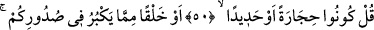
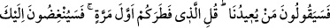
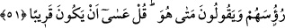
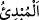
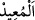
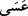

50-51. De ki: “İster taş olun, ister demir. İsterse aklınıza (yeniden dirilmesi)
imkânsız gibi görünen herhangi bir yaratık! (Bunlar, Allah’ın sizi yeniden
diriltmesini güçleştirmez.) Diyecekler ki: “Bizi tekrar (hayata) kim döndürecek?”
De ki: “Sizi ilk kez yaratan.” Sana alaylı alaylı başlarını sallayacaklar ve “O ne
zaman?” diyecekler. De ki: “Yakın olsa gerek!”
Onlara cevab olarak “De ki: “İster taş olun, ister demir. İsterse aklınıza (yeniden
dirilmesi) imkânsız gibi görünen herhangi bir yaratık!” İsterse hayattan en uzak şey
olan size göre hayatı kabul etmesi imkânsız görünen bir varlık bile olsanız mutlaka
diriltileceksiniz ve yeniden yaratılacaksınız. Çünkü Allah Teâlâ’nın kudreti sizi
diriltmekten âciz değildir. Çünkü cisimler ârazları kabulde müşterektirler. Nasıl daha
önce hayatla bezenmiş nârin varlıklar iken sonradan erimiş kemikler oldunuz? Çünkü
bir şey alışmadığına değil alıştığı şeye yönelir. Bu husus temsille anlatılmıştır. Yâni,
Tefsiru’l-Kâşifî’de belirtildiği gibi ‘Mesela vücudunuz taş veya demir oldu’ demektir.
el-Kevâşî’de der ki: “Buradaki emir âciz bırakma ve azarlama emridir, yoksa
ilzam/mecbur tutma emri değildir.” Bahru’l-ulûm’da ise şöyle der: “Bu emir gerçek
mânâda değildir, burada mecaz söz konusudur. Çünkü bununla kasdedilen onları küçük
ve değersiz kılmak ve onların anlayışlarının kıtlığına işâret etmektir. Yoksa onların taş
veya demir olmalarını istemek değildir. Çünkü bunu yapmaya güçleri yoktur. Onların
gönüllerine büyük gelen şey ise gökler ve dağlardır. Cumhûr ise bunun ölüm olduğunu
söylemiştir. Çünkü nefse ölümden daha büyük gelen bir şey yoktur. Yâni ‘Siz bizzat
ölümün kendisi olsanız bile ben sizi mutlaka öldürür, sonra da diriltirdim.’
“Diyecekler ki: “Bizi tekrar (hayata) kim döndürecek?” öldükten sonra bizi kim
diriltecek? Onlar ilk yaratılışlarını unuttukları için tekrar diriltilmelerini unutmaları da
gerekli olmuştur. “De ki: “Sizi ilk kez” bir benzeri olmaksızın, siz toprak iken ve hayat
kokusunu tatmamışken “yaratan.” Yâni sizi var eden mutlak kudret sâhibi Allah
diriltecek. O “
el-Mübdi” ve “
el-Muîd”dir; ilk defa yaratan ve tekrar
diriltecek olandır. Yâni Cenâb-ı Hak başlangıçta toprağa nasıl can verdiyse ölümden
sonra nihâyette de öylece can verir.
“Sana alaylı alaylı başlarını sallayacaklar” Şaşkınlıkları ve inkârları sebebiyle sana
başlarını sallayacaklar “ve” alay ederek: “O ne zaman?” Yâni bahsettiğin dirilme ne
zaman olacak? “diyecekler.” Bu, yaratan ve dirilteni belirledikten sonra dirilme vaktini
sormaktır. “De ki: “Yakın olsa gerek!” Onlara bunun yakında olmasının umulduğunu
söyle. Çünkü her gelecek olan yakındır. Ya da zamanın çoğu geçtiği ve az bir zaman
kaldığı için onun gelmesi yakındır. Bahru’l-ulûm’da şöyle der: “Öldükten sonra dirilme
yakındır. Çünkü “
asâ (umulur ki)” fiili aslında ümid, arzu ve temennî içindir.”